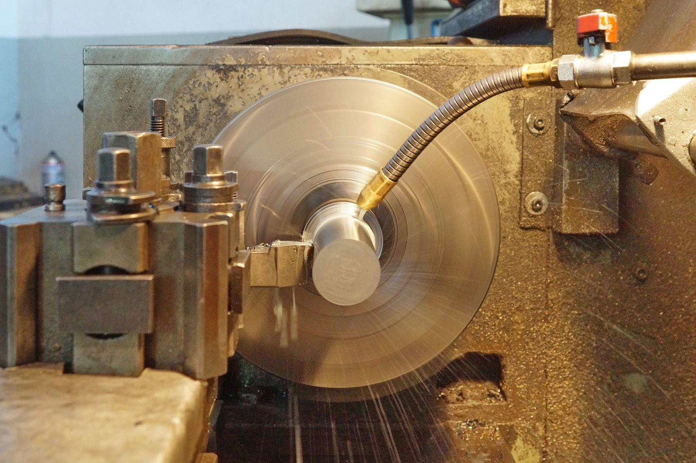
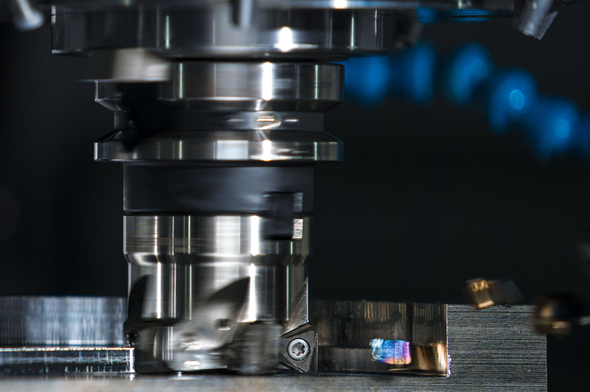
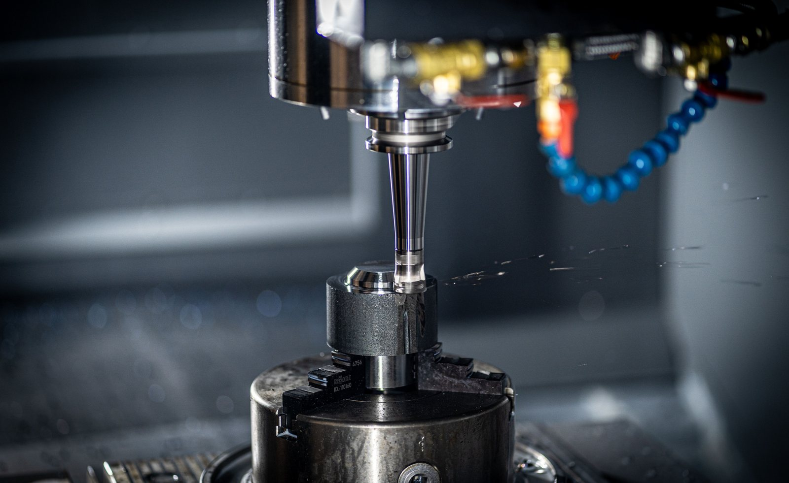
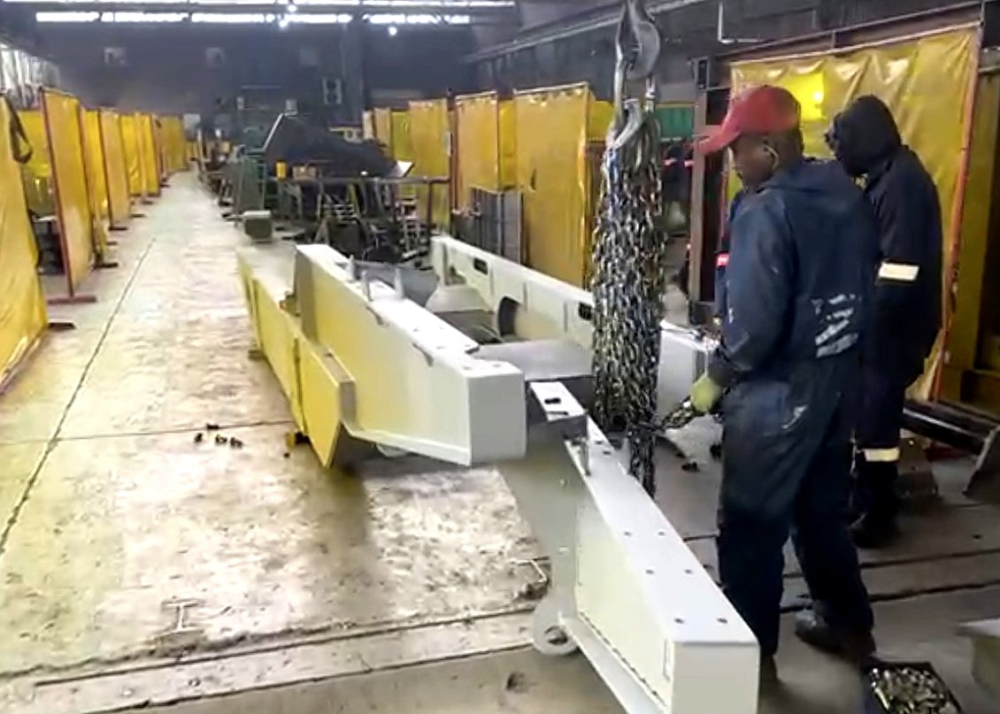
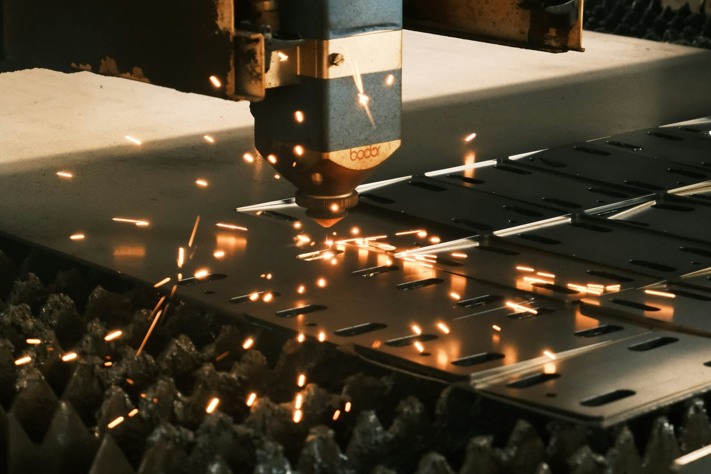
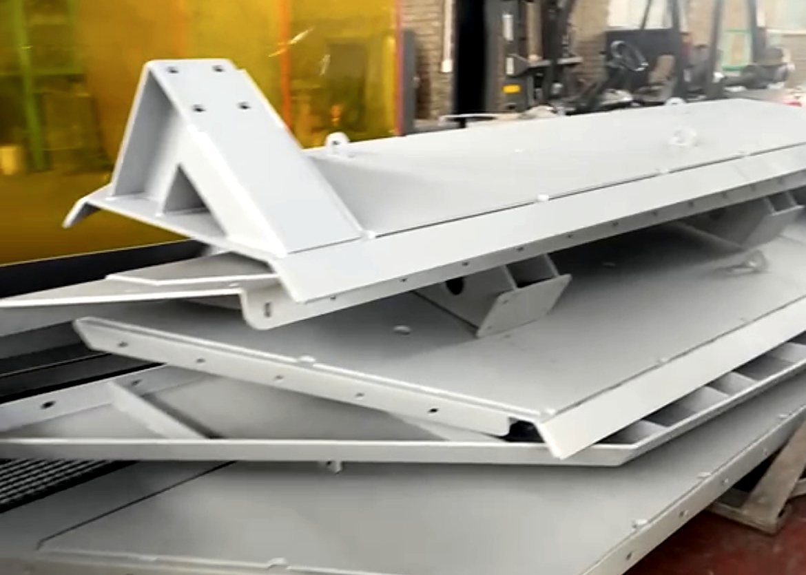
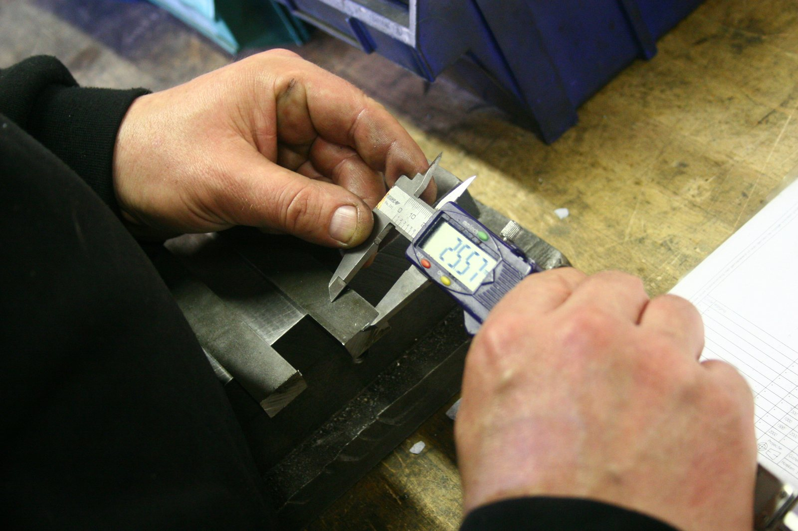

CAPABILITY
Machined components, welded frames, finish, assembly and inspection. One quality system and one point of accountability, from raw stock to a machine that works.

TURNING
CNC lathe work on shafts, pins, bushes and threaded parts, producing precise cylindrical, conical and threaded profiles to IT6 and below.
MILLING
Housings, mounting faces, slots and complex geometries machined with repeatable accuracy across multiple axes, from the first part to the last.


MACHINING
Full subtractive processing from raw stock to a finished, functional machine component, including the final machining of welded frames and bases.
MACHINE FRAMES
Frames, bases, weldments and assemblies built to hold a working machine true under load and over time, so bores, faces and mounting points land where the drawing says. All three full-time welders are coded. CO₂ is in-house. Laser welding and argon TIG are available through vetted partners.


CUTTING
Laser, plasma and saw separation of raw stock into machine parts, cut to exact dimensional requirements.
FINISH
Full shotblast, priming and paint to final coat, with baking for corrosion control, so the machine looks as good as it runs.


ASSEMBLY AND INSPECTION
Components are fitted up and assembled in-house, then checked against the drawing before anything leaves the floor. Inspection can be extended to your requirement, including welding X-rays and bespoke reporting.